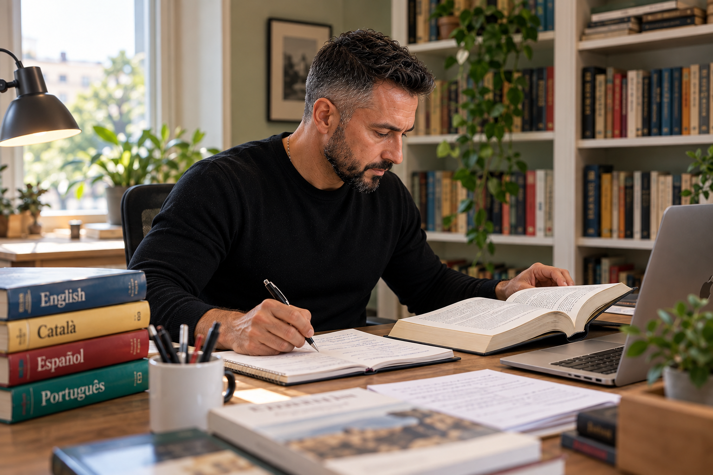
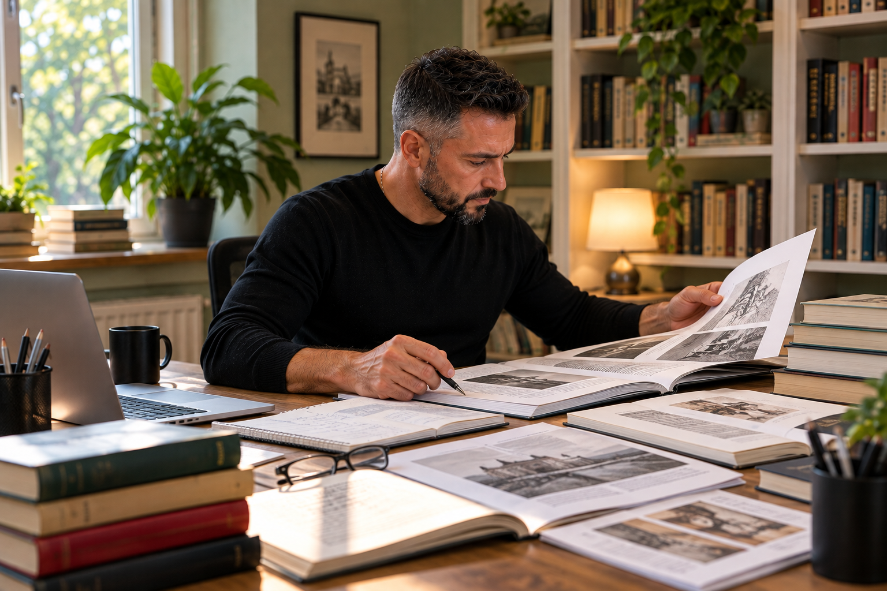
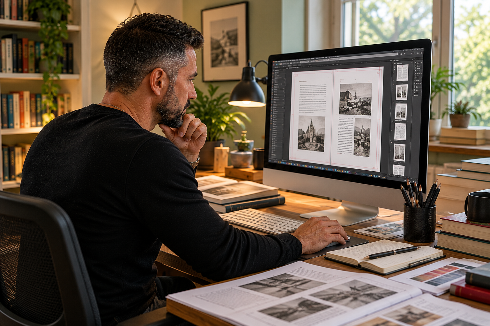
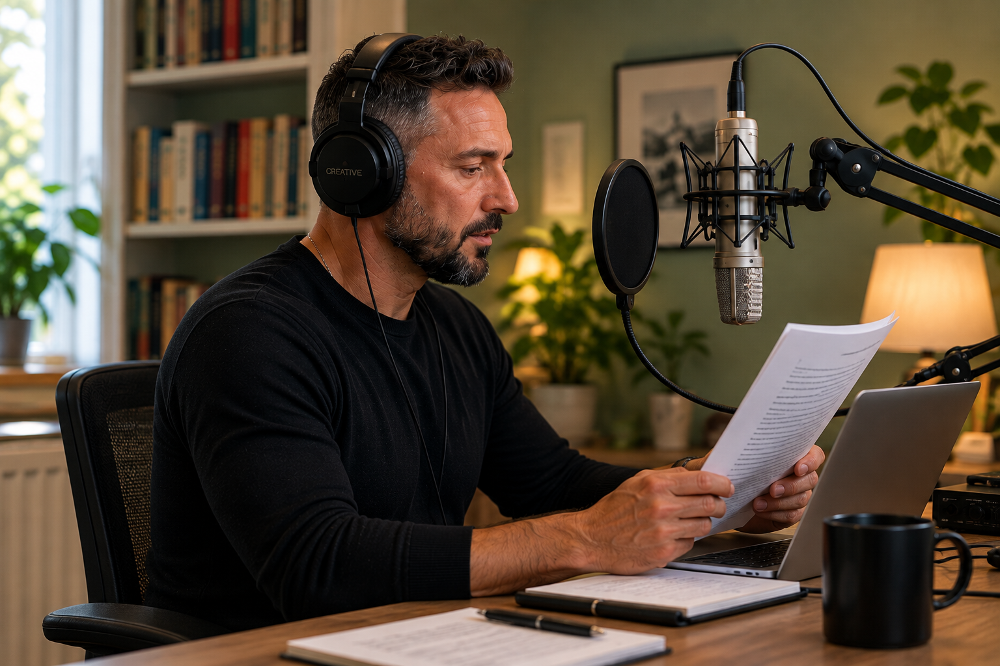

Serveis lingüístics i editorials
Ofereixo serveis de traducció, correcció, edició de llibres, maquetació editorial i locució. Descobreix què inclou cada servei i com et puc ajudar amb el teu projecte.

Traducció
Cada text té una veu. La traducció l’ha de conservar.
Traduir no és substituir paraules d’una llengua per les d’una altra. És entendre què vol transmetre un text i trobar la manera de dir-ho amb naturalitat, precisió i el registre adequat. Una bona traducció ha de respectar l’original i, alhora, permetre que el lector la llegeixi com si hagués estat escrita directament en la seva llengua.
Ofereixo serveis de traducció per a agències, editorials, empreses i professionals que necessiten textos cuidats, coherents i preparats per arribar al seu públic.
Quins textos puc traduir?
Llibres i textos editorials. Obres de narrativa, llibres divulgatius, materials didàctics i altres projectes editorials en què cal mantenir la veu de l’autor, l’estil i la coherència del conjunt.
Articles i continguts informatius. Textos destinats a informar, explicar o divulgar, amb especial atenció a la claredat, la terminologia i la fluïdesa de la lectura.
Pàgines web i continguts digitals. Traducció i adaptació de textos perquè el missatge funcioni en la llengua d’arribada i mantingui un to coherent en totes les seccions.
Textos corporatius i de comunicació. Presentacions, catàlegs, materials informatius i altres continguts que requereixen una expressió clara i adequada als destinataris.
Combinacions lingüístiques
- De l’anglès al català i al castellà.
- Del portuguès al català i al castellà.
- Del català al castellà i del castellà al català.
Una traducció acurada de principi a fi
En cada projecte presto atenció al sentit del text original, a la naturalitat de la redacció, a la coherència terminològica i a la uniformitat de l’estil. També tinc en compte les indicacions del client, el públic destinatari i les particularitats del format de publicació.
La meva experiència en el món editorial em permet abordar la traducció tenint present no només el text, sinó també el procés posterior de revisió i publicació.
Parlem del teu projecte
Si necessites traduir un llibre, un conjunt de textos o un projecte puntual, explica’m de quin material es tracta, les llengües de treball i el termini previst, i et prepararé un pressupost sense compromís.
Sol·licitar informació o pressupost Escriure amb GmailCorrecció
Un text ben escrit transmet confiança.
Un bon text no només ha de ser correcte des del punt de vista lingüístic. També ha de ser clar, coherent i agradable de llegir. Les errades ortogràfiques, les construccions poc naturals o les incoherències d’estil poden distreure el lector i restar força al missatge.
Ofereixo serveis de correcció en català i castellà per a editorials, agències, empreses i professionals que volen publicar o presentar textos cuidats fins a l’últim detall.
Quins tipus de correcció ofereixo?
Correcció ortotipogràfica. Reviso l’ortografia, l’accentuació, la puntuació, la gramàtica i els criteris tipogràfics del text. També comprovo l’ús coherent de majúscules i minúscules, cursives, cometes, abreviatures i altres convencions editorials.
Correcció d’estil. Treballo la claredat, la fluïdesa i la naturalitat de la redacció. Detecto repeticions innecessàries, frases confuses, construccions forçades i canvis de registre, i proposo millores que respectin la intenció i la veu de l’autor.
Unificació de criteris. En documents extensos i projectes editorials, vetllo perquè la terminologia, les convencions tipogràfiques i les decisions d’estil es mantinguin coherents de principi a fi.
Revisió de proves. Abans de publicar o imprimir un llibre, reviso les proves maquetades per detectar errades que hagin pogut passar desapercebudes, problemes de partició de paraules i altres detalls que afectin la presentació final del text.
Quins textos puc corregir?
Llibres i manuscrits. Narrativa, assaig, obres divulgatives, llibres pràctics i materials didàctics que necessiten una revisió lingüística i editorial abans de publicar-se.
Articles i publicacions. Textos informatius, divulgatius i especialitzats en què la precisió i la claredat són essencials.
Pàgines web i continguts digitals. Revisió de textos perquè mantinguin un estil coherent, una expressió natural i una imatge professional.
Documents corporatius i materials de comunicació. Presentacions, catàlegs, informes, fullets i altres documents destinats a clients, col·laboradors o públic general.
Respectar la veu de qui escriu
Corregir no significa reescriure un text segons les preferències del corrector. Cada autor i cada projecte tenen un estil propi que cal preservar.
Per això, distingeixo entre les errades que s’han de corregir i les decisions estilístiques que convé respectar. Quan una frase admet diverses solucions, busco la que s’adapta millor al context, al registre i al públic destinatari.
La meva experiència en el sector editorial em permet abordar la correcció tenint en compte tant la qualitat lingüística com les necessitats del procés de publicació.
Parlem del teu projecte
Si tens un llibre, un manuscrit o qualsevol altre text que necessita una revisió, indica’m de quin tipus de document es tracta, la llengua, l’extensió aproximada i el termini previst, i et prepararé un pressupost sense compromís.
Sol·licitar informació o pressupost Escriure amb Gmail
Edició de llibres
De la primera pàgina al llibre acabat.
Publicar un llibre és molt més que disposar d’un bon manuscrit. Cal prendre decisions editorials, coordinar professionals de diferents especialitats i tenir cura de cada fase del procés perquè el resultat sigui una obra coherent, ben presentada i preparada per arribar als lectors.
Tinc més de 20 anys d’experiència en l’edició de llibres de temàtiques i característiques molt diverses. Al llarg d’aquest temps he treballat en projectes que requereixen tant una visió global del llibre com una atenció minuciosa als detalls. M’encarrego de gestionar i coordinar els professionals que intervenen en cada obra perquè totes les peces encaixin i el llibre es publiqui amb cara i ulls.
Què inclou el servei d’edició?
Planificació editorial. Estudio les característiques del projecte, les necessitats del manuscrit, el públic al qual s’adreça i el format de publicació. A partir d’aquí, estableixo les fases de treball, els recursos necessaris i un calendari realista.
Coordinació de l’equip. Gestiono i coordino equips de traductors, correctors, il·lustradors, maquetistes i assessors segons les necessitats de cada llibre. Vetllo perquè tothom treballi amb criteris compartits, disposi de les indicacions necessàries i compleixi els terminis acordats.
Seguiment dels textos. Superviso el procés de traducció, revisió i correcció per garantir la coherència del conjunt. Quan hi intervenen diversos professionals, és especialment important unificar criteris lingüístics, terminològics i editorials.
Il·lustració i elements gràfics. Coordino la preparació de les il·lustracions, les fotografies, els gràfics i altres recursos visuals perquè s’integrin correctament amb el contingut i responguin a les necessitats de l’obra.
Maquetació i preparació dels originals. Faig el seguiment del disseny interior, la composició de les pàgines i la preparació dels arxius per a la publicació impresa o digital. Comprovo que els textos i els elements gràfics s’hagin incorporat correctament i que el llibre mantingui una presentació uniforme.
Revisió final i publicació. Coordino la revisió de les proves i els últims ajustos abans de donar el llibre per acabat. L’objectiu és detectar i resoldre possibles incidències abans que arribin al lector.
Un interlocutor per a tot el projecte
Quan en l’edició d’un llibre intervenen diversos professionals, la comunicació i la coordinació són tan importants com la qualitat de cadascuna de les feines.
Puc assumir la gestió editorial del projecte perquè el client no hagi de supervisar individualment cada fase ni fer d’intermediari entre tots els col·laboradors. M’encarrego de transmetre les indicacions, resoldre dubtes, fer el seguiment de les tasques i mantenir una visió de conjunt fins a la finalització de l’obra.
Aquesta manera de treballar també em permet col·laborar amb editorials i agències que necessiten reforç en la coordinació de projectes, ja sigui per assumir un llibre complet o per gestionar una part concreta del procés editorial.
L’experiència de publicar llibres propis
A més de la meva trajectòria professional en el sector editorial, he editat una seixantena de llibres propis. Aquesta experiència m’ha permès treballar directament en totes les fases de creació i publicació: des de l’organització dels continguts fins a la revisió final, la maquetació i la preparació dels arxius per a impressió i edició digital.
Conèixer el procés des de dins m’ajuda a anticipar problemes, entendre les necessitats dels diferents professionals i prendre decisions pensant sempre en el resultat final.
Parlem del teu projecte editorial
Si tens un manuscrit que vols convertir en llibre, necessites coordinar un equip de professionals o busques suport per gestionar una publicació, explica’m en quin punt es troba el projecte, quin tipus de llibre vols publicar i quins serveis necessites. Estudiarem la millor manera d’organitzar la feina i et prepararé un pressupost sense compromís.
Sol·licitar informació o pressupost Escriure amb Gmail
Maquetació editorial
Un bon llibre es construeix pàgina a pàgina.
La maquetació és una part essencial del procés editorial. No es tracta només de distribuir el text i les imatges dins d’unes pàgines, sinó de crear una estructura visual que faciliti la lectura, respecti el contingut i doni al llibre una identitat pròpia.
Ofereixo serveis de maquetació de llibres impresos, amb una atenció especial a la llegibilitat, la coherència gràfica i la preparació correcta dels arxius per a la publicació.
He maquetat més d’una seixantena de llibres propis per publicar-los a Amazon, a més de la meva trajectòria de més de 20 anys en el sector editorial. Aquesta experiència em permet conèixer de primera mà tant les decisions de disseny que intervenen en la creació d’un llibre com els requisits tècnics que cal tenir presents abans de publicar-lo.
Quins serveis de maquetació ofereixo?
Maquetació de llibres impresos. Dissenyo i composo les pàgines interiors tenint en compte el format del llibre, els marges, la tipografia, els interlineats, la jerarquia dels títols i la distribució dels elements gràfics. L’objectiu és aconseguir una lectura còmoda i una presentació professional de principi a fi.
Llibres il·lustrats i amb contingut gràfic. Integro fotografies, il·lustracions, taules, gràfics i altres elements visuals perquè mantinguin una relació equilibrada amb el text i es presentin amb la qualitat adequada.
Disseny de l’estructura interior. Defineixo els criteris gràfics que donaran unitat al llibre: pàgines d’obertura, capçaleres, numeració, títols, subtítols, destacats, notes i altres elements que ajuden el lector a orientar-se dins de l’obra.
Preparació d’arxius per a impressió. Reviso les dimensions, els marges, els sagnats, la resolució de les imatges i altres aspectes tècnics perquè els arxius finals s’ajustin als requisits de la impremta o de la plataforma de publicació.
Revisió de proves maquetades. Comprovo la composició final de les pàgines per detectar problemes com ara salts inadequats, línies vídues i òrfenes, particions incorrectes, elements desplaçats o incoherències en el disseny.
Quins tipus de llibres puc maquetar?
Treballo amb projectes editorials de característiques diverses, entre els quals hi ha llibres de narrativa, assaig i divulgació, materials didàctics, llibres de cuina i receptaris, obres il·lustrades i publicacions que combinen text i imatge.
Cada tipus de llibre planteja necessitats diferents. Una novel·la requereix una composició discreta que afavoreixi la lectura continuada, mentre que un llibre didàctic o un receptari necessita una estructura que permeti localitzar la informació amb facilitat.
Per això, adapto la maquetació al contingut, al públic destinatari i a l’ús que es farà del llibre.
Experiència directa amb Amazon KDP
La maquetació de més de seixanta llibres propis per a Amazon m’ha permès familiaritzar-me amb les particularitats de la publicació independent i amb la preparació d’originals per a impressió sota demanda i edició digital.
Conec la importància de definir correctament el format del llibre, els marges interiors i exteriors, els sagnats, la distribució de les imatges i la preparació dels arxius finals. També sé que una incidència aparentment petita pot obligar a revisar moltes pàgines quan el llibre ja està a punt de publicar-se.
Aquesta experiència em permet acompanyar el projecte més enllà de la composició de les pàgines, tenint present el resultat que el lector tindrà a les mans.
Una maquetació pensada per al contingut
No tots els llibres necessiten el mateix disseny. Abans de començar, estudio les característiques del text, la presència d’imatges o altres elements gràfics, el format de publicació i les preferències del client.
A partir d’aquí, estableixo uns criteris de maquetació coherents que es mantinguin al llarg de tota l’obra. El resultat ha de ser un llibre visualment equilibrat, fàcil de llegir i fidel a la personalitat del projecte.
Parlem del teu llibre
Si tens un manuscrit preparat per maquetar, vols publicar un llibre a Amazon KDP o necessites preparar els arxius per a una impremta, explica’m quin tipus de llibre és, l’extensió aproximada, si conté imatges i en quin format el vols publicar. Amb aquesta informació podré valorar les necessitats del projecte i preparar-te un pressupost sense compromís.
Sol·licitar informació o pressupost Escriure amb Gmail
Locució
Donar veu a les paraules és donar vida al missatge.
Una bona locució no consisteix només a llegir un text en veu alta. Cal entendre què es vol comunicar, trobar el ritme adequat i transmetre el missatge amb naturalitat. La veu pot acompanyar el lector d’un audiollibre, explicar una història, presentar una empresa o fer que un contingut audiovisual connecti amb el seu públic.
Al llarg de la meva trajectòria professional he col·laborat amb editorials i agències públiques i privades en projectes de naturalesa diversa. Aquesta experiència m’ha permès treballar amb textos, formats i necessitats comunicatives diferents, tant en l’àmbit editorial com en el dels continguts audiovisuals.
He enregistrat audiollibres, continguts digitals per a vídeos i altres peces de locució, i disposo d’un estudi propi des del qual puc preparar i enregistrar nous projectes.
Quins serveis de locució ofereixo?
Audiollibres. La narració d’un llibre requereix mantenir l’atenció de l’oient durant una estona prolongada, respectar l’estil de l’obra i donar a cada passatge l’entonació que necessita. Treballo el ritme, les pauses i la interpretació perquè l’escolta sigui fluida i agradable.
Vídeos corporatius i institucionals. Poso veu a presentacions d’empreses, vídeos informatius, peces institucionals i altres continguts audiovisuals que necessiten transmetre un missatge amb claredat i un to adequat al públic destinatari.
Continguts digitals. Locució per a vídeos divulgatius, materials formatius, presentacions, tutorials i altres peces destinades a webs, plataformes digitals o xarxes socials.
Anuncis i peces promocionals. Enregistrament de missatges publicitaris i promocionals que requereixen una veu capaç d’adaptar-se al ritme, la durada i la intenció comunicativa de cada peça.
Materials educatius i didàctics. Enregistrament de lectures, explicacions, diàlegs i altres recursos sonors pensats per a l’aprenentatge. La claredat de la pronunciació i un ritme adequat són especialment importants en aquest tipus de continguts.
Una veu al servei de cada projecte
Cada text demana una manera diferent de ser interpretat. Un audiollibre no té el mateix ritme que un anunci, i un vídeo institucional necessita un registre diferent del d’un material educatiu.
Abans d’enregistrar, estudio el contingut, el públic destinatari i la finalitat de la peça. Tinc en compte les indicacions del client sobre el to, la pronunciació, el ritme i la durada, i adapto la locució a les característiques del projecte.
La meva experiència com a traductor, corrector i editor també m’ajuda a entendre el text abans de posar-hi veu: identificar-ne la intenció, detectar possibles ambigüitats i donar sentit a la puntuació i a les pauses.
Enregistrament en estudi propi
Disposo d’un espai de treball propi equipat per enregistrar locucions, cosa que em permet organitzar les sessions amb flexibilitat i treballar en projectes a distància.
Puc col·laborar amb editorials, agències de comunicació, productores audiovisuals, empreses i professionals que necessiten una veu per als seus continguts. Abans de començar, acordem les característiques de la peça, les indicacions d’interpretació, el format de lliurament i els terminis.
Escolta la meva veu
A la pàgina principal trobaràs mostres de locució que et permetran escoltar diferents registres i valorar quin s’adapta millor al teu projecte.
Escoltar mostres de locucióParlem del teu projecte
Si necessites una locució per a un audiollibre, un vídeo o qualsevol altre contingut sonor, explica’m de quin tipus de projecte es tracta, la durada aproximada del text, el registre que busques i el termini previst. Amb aquesta informació podré valorar les necessitats de l’enregistrament i preparar-te un pressupost sense compromís.
Sol·licitar informació o pressupost Escriure amb Gmail